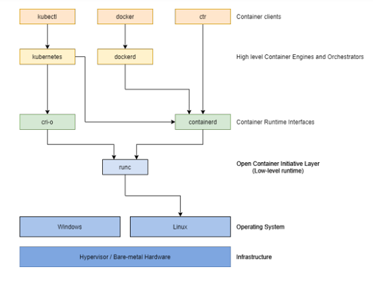

Kubernetes Installation Guide

Verify MAC Address and product_uuid
You can get the MAC address of network interfaces using the command ip link or ifconfig -a.
The product_uuid can be checked using the command sudo cat /sys/class/dmi/id/product_uuid.
Ping Between Nodes
Verify network filtering (firewall) by running:
nc 127.0.0.1 6443
# or ss -lntp 6443 Install Container Runtime
Note: Docker Engine does not implement the CRI which is a requirement for a container runtime to work with Kubernetes. For that reason, an additional service cri-dockerd has to be installed. cri-dockerd is a project based on the legacy built-in Docker Engine support that was removed from the kubelet in version 1.24. fini 07/2022
Runtime Unix domain socket paths:
- containerd:
unix:///var/run/containerd/containerd.sock - CRI-O:
unix:///var/run/crio/crio.sock - Docker Engine (using cri-dockerd):
unix:///var/run/cri-dockerd.sock
Installing kubeadm, kubelet, and kubectl
You need to install these packages on all of your machines:
kubeadm: Command to bootstrap the cluster.kubelet: Component that runs on all machines and manages pods and containers.kubectl: Command-line utility to interact with the cluster.
Using kubeadm to Create a Cluster
To initialize the control-plane node, run: kubeadm init <args>

Additional Setup Steps
It's recommended to follow these steps before initializing the cluster:
Sur les trois machines
executer ce script sur les trois VMs : attention ! configuration adresse IP privée
# Disable all swap devices, which can improve performance but may also increase the risk of memory shortage.
swapoff -a
# Load the br_netfilter module for bridge filtering.
modprobe br_netfilter
# Load the overlay module required for overlayFS storage, often used with Docker and other containerization tools.
modprobe overlay
#verifier
lsmod | head
# Enable iptables filtering for bridges. This is essential for certain Kubernetes network types.
echo "1" > /proc/sys/net/bridge/bridge-nf-call-iptables
echo "1" > /proc/sys/net/bridge/bridge-nf-call-ip6tables
# Enable IP forwarding to allow packet routing between interfaces.
echo "1" > /proc/sys/net/ipv4/ip_forward
# Update the package list for the apt package manager.
apt-get update
# Install the apt-transport-https and curl tools.
apt-get install -y apt-transport-https curl
# Add the signature key for the opensuse repository for libcontainers.
curl -s https://download.opensuse.org/repositories/devel:/kubic:/libcontainers:/stable/xUbuntu_20.04/Release.key | apt-key add -
# Add the signature key for the opensuse repository for cri-o 1.20.
curl -s https://download.opensuse.org/repositories/devel:/kubic:/libcontainers:/stable:/cri-o:/1.20/xUbuntu_20.04/Release.key | apt-key add -
#verifier
apt-key list
# Add the repository for libcontainers.
apt-add-repository "deb https://download.opensuse.org/repositories/devel:/kubic:/libcontainers:/stable/xUbuntu_20.04 /"
# Add the repository for cri-o 1.20.
apt-add-repository "deb https://download.opensuse.org/repositories/devel:/kubic:/libcontainers:/stable:/cri-o:/1.20/xUbuntu_20.04/ /"
#verifier
cat /etc/apt/sources.list
# Install CRI-O (a Kubernetes runtime) and other related tools.
apt-get install -y cri-o cri-o-runc cri-tools runc
# Start the CRI-O service.
systemctl start crio
#verifier
ss -lntp
# Enable the CRI-O service on startup.
systemctl enable crio
# Add the signature key for the Kubernetes repository.
curl -s https://packages.cloud.google.com/apt/doc/apt-key.gpg | apt-key add -
# Add the Kubernetes repository.
echo "deb https://apt.kubernetes.io/ kubernetes-xenial main" > /etc/apt/sources.list.d/kubernetes.list
# Update the package list.
apt-get update
# Install specific versions of kubectl, kubeadm, and kubelet.
apt-get install -y kubectl=1.20.1-00 kubeadm=1.20.1-00 kubelet=1.20.1-00
# Configure additional arguments for kubelet. $1 represents the IP address you want to use for the node.
echo "KUBELET_EXTRA_ARGS=--node-ip="$1" --cgroup-driver=systemd --container-runtime=remote --container-runtime-endpoint=\"unix:///var/run/crio/crio.sock\"" > /etc/default/kubelet
$1 corresponds to the private IP address of the worker or master interface to be used for the cluster.